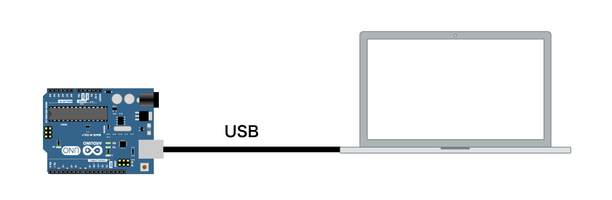
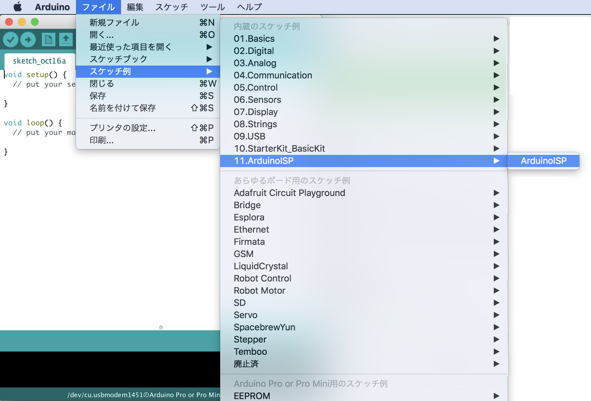
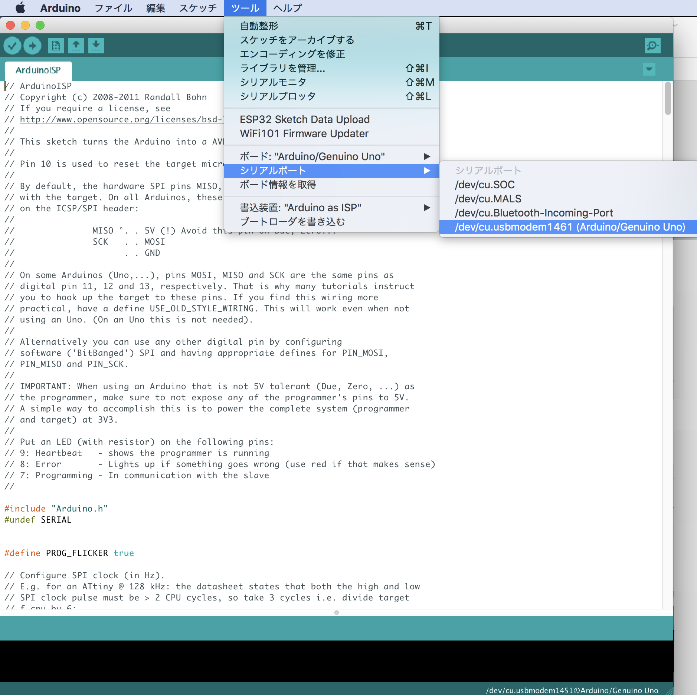
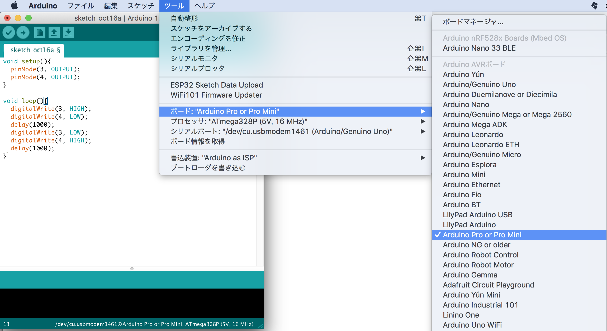
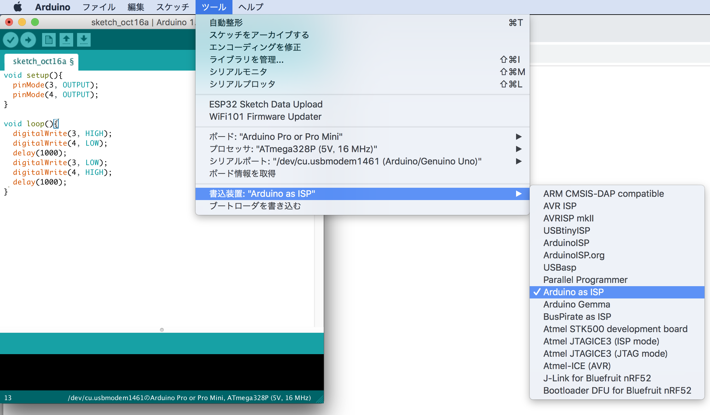
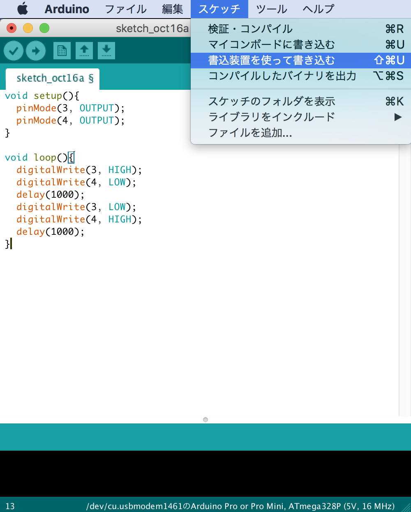

Firmwareの開発
必要な部材
| 名称 | 用途 |
|---|---|
| Arduino UNO | Firmware転送用 |
| FaBo #604 | ROM Writer Sheild |
| Tag-Connect | Firmware焼き込み |
| FaBo JetRacer #612 | マルチクレスタを含む制御用途 |
焼き込み環境の準備
Arduino UNOとPCをつなぎ、ArduinoISPのソースをBuildし、Arduinoに焼き込みます。





転送の手順
Arduino UNOにFaBo #604を差し込み、TAG-Connectを接続します。
Arduinoで下記サンプルコードを作成します。
1 2 3 4 5 6 7 8 9 10 11 12 13 | void setup(){ pinMode(3, OUTPUT); pinMode(4, OUTPUT); } void loop(){ digitalWrite(3, HIGH); digitalWrite(4, LOW); delay(1000); digitalWrite(3, LOW); digitalWrite(4, HIGH); delay(1000); } |


